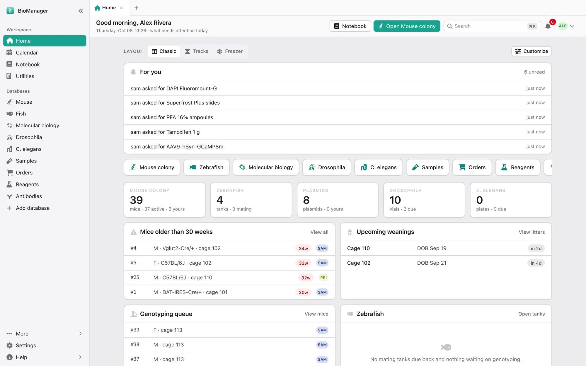

首页：每天早上打开，今天要做的事一目了然。
实验室成员
自己的品系、鱼、保种和样本自己管，不用再翻别人的表格。
实验室主管和 PI
全组盘点，一项不漏：什么归谁、哪些笼空着、哪些事已经逾期。
养多种模式生物的实验室
小鼠、斑马鱼、果蝇和线虫放在一起管；你养的任何其他动物，也能几分钟建好自己的数据库。
实验室每周都在做的九件事。看 BioManager 怎么一件件搞定。
每天早上，今天该做什么一目了然。 断奶分笼、基因型鉴定、该转管的果蝇、快过期的试剂和未来 14 天的安排，都替你算好了。